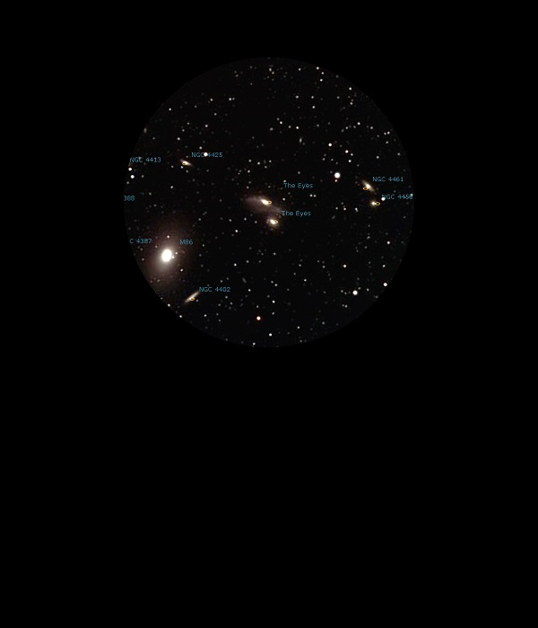

NGC 4438

Interacting Galaxy in Virgo
NGC 4438
Mag 10.1
The Eyes, with NGC 4435. Arp 120
15/04/15
Observing Markarian's Chain of Galaxies, part of the Virgo Cluster
The Eyes. Easy to see why these Galaxies got their names!